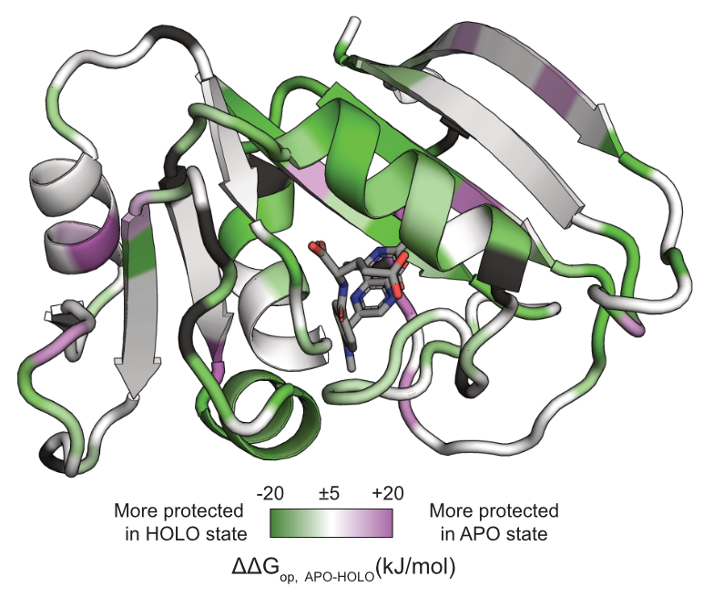
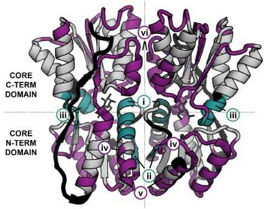
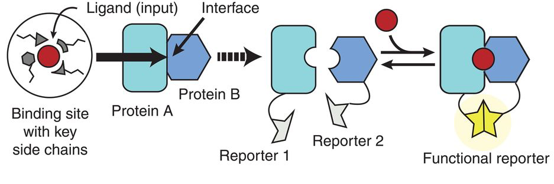
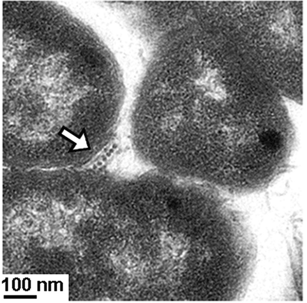
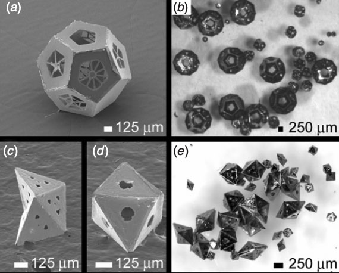

Publications#
{kind=link}
Chenlin Lu1*, Malcolm L. Wells1*, Andrew Reckers, and Anum Glasgow. Site-resolved energetic information from HX/MS experiments. bioRxiv, 2024. (* co-first authors)
*Check out PIGEON-FEATHER Github repo / Documentation
{kind=link}
Daniel C. Pineda Rodriguez, Kyle C. Weber, Belen Sundberg, and Anum Glasgow. MAGPIE: an interactive tool for visualizing and analyzing protein-ligand interactions. Protein Science, 33(8), July 2024.
Check out MAGPIE on Google CoLab here.
Github repo / Tutorial
Stephanie F. Maurina*, John P. O’Sullivan*, Geetika Sharma*, Daniel C. Pineda Rodriguez, Andrea MacFadden, Francesca Cendali, Morkos A. Henen, Jeffrey S. Kieft, Anum Glasgow, and Anna-Lena Steckelberg. An evolutionarily conserved strategy for ribosome binding and inhibition by β-coronavirus non-structural protein 1. Journal of Molecular Biology, 435(20), October 2023. (* co-first authors)

{kind=link}
Anum Glasgow*, Helen T. Hobbs, Zion R. Perry, Malcolm L. Wells, Susan Marqusee†, and Tanja Kortemme†. Ligand-specific changes in conformational flexibility mediate long-range allostery in the lac repressor. Nature Communications 14(1179), February 2023. (* corresponding author; † these authors jointly advised this work.)
Explore our HDX/MS data for LacI here.
Soumya G. Remesh, Gregory E. Merz, Axel F. Brilot, Un Seng Chio, Alexandrea N. Rizo, Thomas H. Pospiech Jr., Irene Lui, Mathew T. Laurie, Jeff Glasgow, Chau Q. Le, Yun Zhang, Devan Diwanji, Evelyn Hernandez, Jocelyne Lopez, Komal Ishwar Pawar, Sergei Pourmal, Amber M. Smith, Fengbo Zhou, QCRG Structural Biology Consortium, Joseph DeRisi, Tanja Kortemme, Oren S. Rosenberg, Anum Glasgow*, Kevin K. Leung*, James A. Wells*, and Kliment A. Verba*. Computational pipeline provides mechanistic understanding of Omicron variant of concern neutralizing engineered ACE2 receptor traps. Structure 31, 1–12, February 2023. (* co-corresponding authors)

Susanna K. Elledge*, Xin X. Zhou*, James R. Byrnes, Alexander J. Martinko, Irene Lui, Katarina Pance, Shion A. Lim, Jeff E. Glasgow, Anum A. Glasgow, Keirstinne Turcios, Nikita S. Iyer, Leonel Torres, Michael J. Peluso, Timothy J. Henrich, Taia T. Wang, Cristina M. Tato, Kevin K. Leung, Bryan Greenhouse, and James A. Wells. Engineering luminescent biosensors for point-of-care SARS-CoV-2 antibody detection. Nature Biotechnology, 39(8):928–935, August 2021. (* co-first authors)

Anum Glasgow*, Jeff Glasgow*, Daniel Limonta, Paige Solomon, Irene Lui, Yang Zhang, Matthew A. Nix, Nicholas J. Rettko, Shoshana Zha, Rachel Yamin, Kevin Kao, Oren S. Rosenberg, Jeffrey V. Ravetch, Arun P. Wiita, Kevin K. Leung, Shion A. Lim, Xin X. Zhou, Tom C. Hobman, Tanja Kortemme, and James A. Wells. Engineered ACE2 receptor traps potently neutralize SARS-CoV-2. Proceedings of the National Academy of Sciences, 117(45):28046–28055, November 2020. (* co-first authors)

{kind=link}
Anum A. Glasgow*, Yao-Ming Huang*, Daniel J. Mandell*, Michael Thompson, Ryan Ritterson, Amanda L. Loshbaugh, Jenna Pellegrino, Cody Krivacic, Roland A. Pache, Kyle A. Barlow, Noah Ollikainen, Deborah Jeon, Mark J. S. Kelly, James S. Fraser, and Tanja Kortemme. Computational design of a modular protein sense/response system. Science, 366(6468):1024–1028, November 2019. (* co-first authors)
Anum Azam Glasgow and Danielle Tullman-Ercek. Type III Secretion Filaments as Templates for Metallic Nanostructure Synthesis. Methods in Molecular Biology, 1798:155–171, 2018.

Anum Azam Glasgow, Han Teng Wong, and Danielle Tullman-Ercek. A Secretion-Amplification Role for Salmonella enterica Translocon Protein SipD. ACS Synthetic Biology, 6(6):1006–1015, June 2017.

{kind=link}
Anum Azam and Danielle Tullman-Ercek. Type-III secretion filaments as scaffolds for inorganic nanostructures. Journal of the Royal Society Interface, 13(114):20150938, January 2016.
Anum Azam, Cheng Li, Kevin J. Metcalf, and Danielle Tullman-Ercek. Type III secretion as a generalizable strategy for the production of full-length biopolymer-forming proteins. Biotechnology and Bioengineering, 113(11):2313–2320, November 2016.
Kevin J. Metcalf, Casey Finnerty, Anum Azam, Elias Valdivia, and Danielle Tullman-Ercek. Using Transcriptional Control To Increase Titers of Secreted Heterologous Proteins by the Type III Secretion System. Applied and Environmental Microbiology, 80(19):5927–5934, October 2014.

Anum Azam, Kate E. Laflin, Mustapha Jamal, Rohan Fernandes, and David H. Gracias. Self-folding micropatterned polymeric containers. Biomedical Microdevices, 13(1):51–58, February 2011.
Jeong-Hyun Cho, Anum Azam, and David H. Gracias. Three Dimensional Nanofabrication Using Surface Forces. Langmuir, 26(21):16534–16539, November 2010.

{kind=link}
David J. Filipiak*, Anum Azam*, Timothy G. Leong, and David H. Gracias. Hierarchical self-assembly of complex polyhedral microcontainers. Journal of Micromechanics and Microengineering, 19(7):075012, June 2009. (* co-first authors)
Anum Azam, Timothy G. Leong, Aasiyeh M. Zarafshar, and David H. Gracias. Compactness Determines the Success of Cube and Octahedron Self-Assembly. PLOS ONE, 4(2):e4451, February 2009.